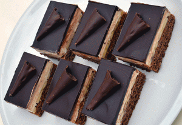

Bebe-Schnitten mit Schokoladenpudding
Sie möchten Gäste bewirten, sind aber kein Jamie Oliver? Diese Bebe-Schnitten ohne Backen gelingen wirklich jedem.
- Verwendete Mischung
- Kakao holländischer Art

Zutaten
- 4 Päckchen BEBE-Kekse: 2 helle, 2 dunkle
- 2 Becher saure Sahne
- 1 Becher Schlagsahne
- 40 g Vanillezucker
- 150 g Schokoladenpuddingpulver (3 Beutel)
- 1 Liter Milch
- Kakao holländischer Art zum Bestäuben
Zubereitung
- Legen Sie ein Blech mit den hellen Bebe-Keksen aus.
- Kochen Sie den Schokoladenpudding nach Packungsanleitung und gießen Sie ihn gleichmäßig über die Kekse.
- Legen Sie die dunklen Bebe-Kekse auf die Puddingschicht.
- Schlagen Sie die Schlagsahne mit dem Vanillezucker steif, heben Sie die saure Sahne unter und streichen Sie die Mischung auf die Kekse.
- Bestäuben Sie die Schnitten mit dunklem Kakao und lassen Sie sie im Kühlschrank durchziehen, am besten über Nacht.
Tipp: Haben Sie einen anderen als Schokoladenpudding zur Hand, experimentieren Sie — die Schnitten schmecken auch mit Vanillepudding und Zimtbestäubung ausgezeichnet.